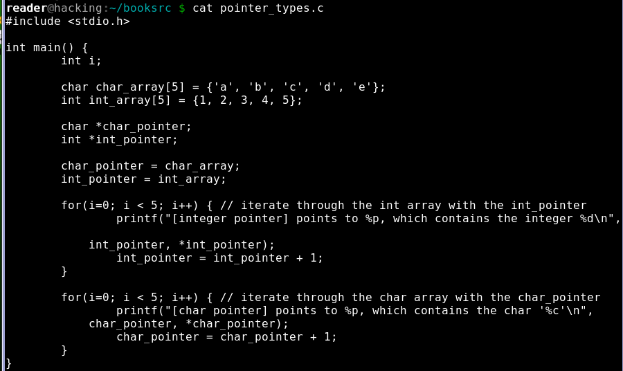

强制类型转换
1. typecasting.c
2. pointer_types.c
3. pointer_types2.c,光标为强调不同，指针指向不兼容的数据类型,int_pointer指向字符数据,char_pointer指向整型数据.
4. 编译器发出警告,指出指针指向了不兼容的数据类型.
5. 编译器仍能编译代码,只是会提示程序员，可能产生无法预料的结果.
6.pointer_types3.c 强制类型转换是动态改变不能正常工作的变量类型的一种方式.
7. 首先必须将它们的类型强制转换为正确的数据类型,以便给地址增加正确的值，此后，需要重新将指针类型强制转换为指针的数据类型，这看起来比较笨，但是可以正常工作.
8. pointer_types4.c,加入单一的void指针,每次使用,将其转换为正确的类型,编译器直到void指针是无类型的，因此不需要经过强制类型转换,即可将任意类型的指针存储在void指针中，但这也意味着，在解除引用时,必须对void指针进行强制转换.
9. 执行结果.

10. pointer_types5.c使用一个无符号整数来存储这个地址.

11. 结果